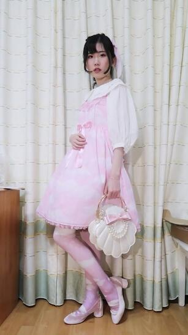
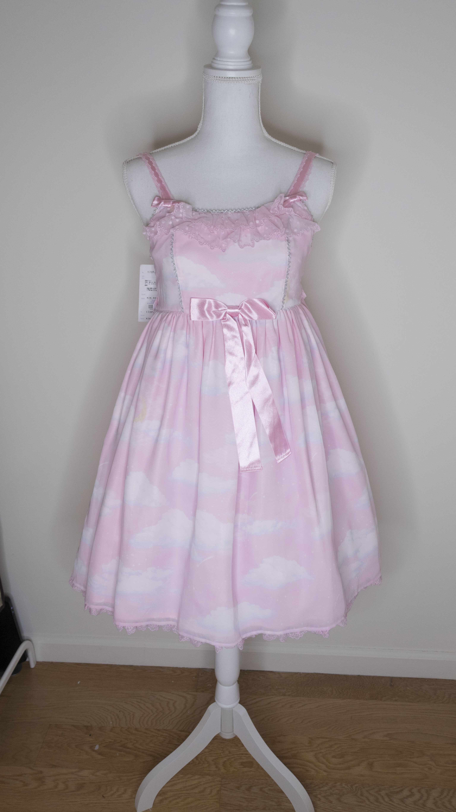
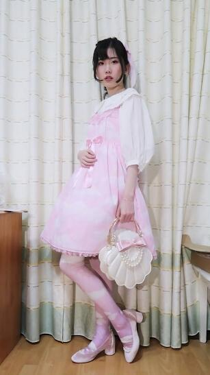
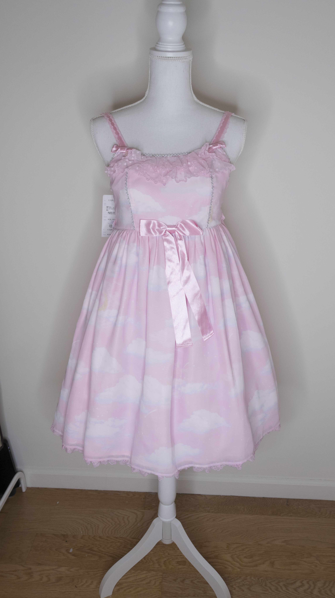
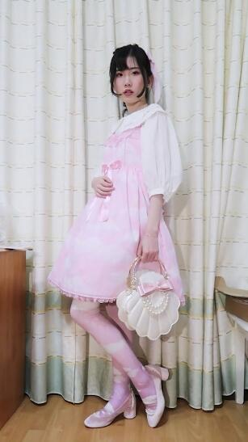
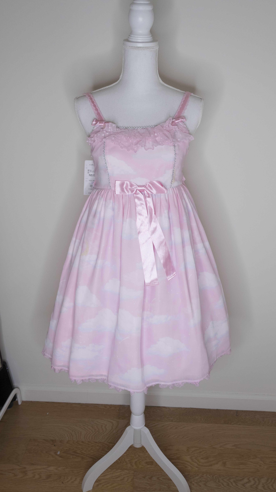

Misty Sky JSK
 
Misty Sky is a popular
dress from Lolita brand Angelic Pretty,
trafficked in 2012,and re-trafficked in 2016.
The print is based on the puffy clouds.
The highest price went to USD 2000+ in the past.
 


